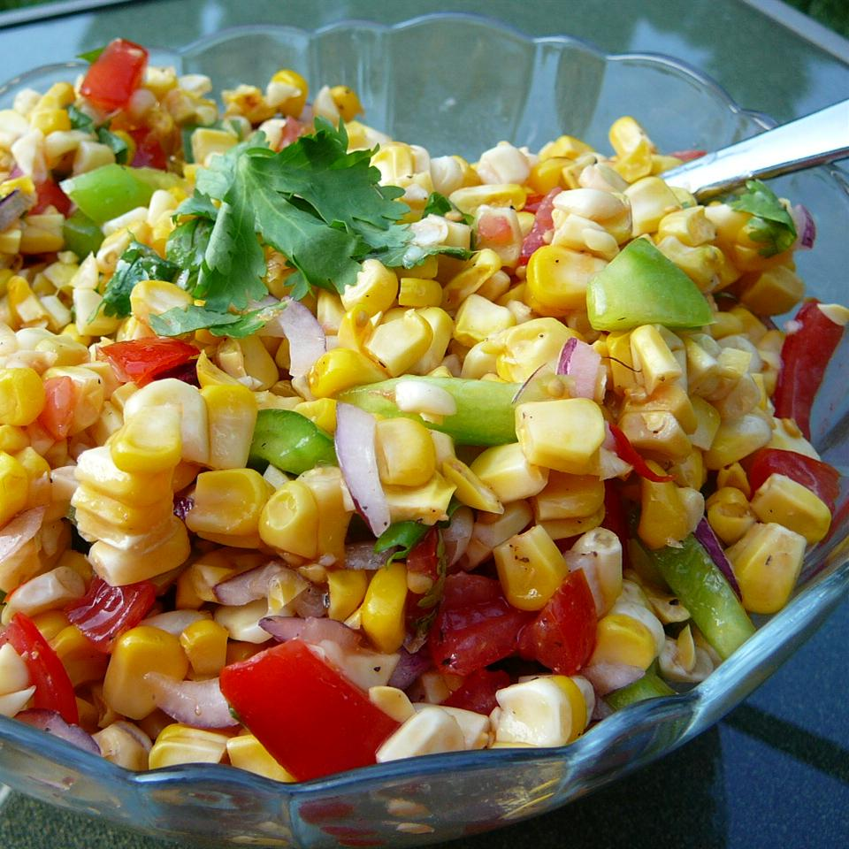

Grilled Corn Salad

Description
A yummy and easy side for hot summer days! Goes great with your grilled dishes or just to munch on. This recipe will last several days when covered in an airtight container and refrigerated.
Ingredients
- 6 ears freshly shucked corn
- 1 green pepper, diced
- 2 Roma (plum) tomatoes, diced
- ¼ cup diced red onion
- ½ bunch fresh cilantro, chopped, or more to taste
- 2 teaspoons olive oil, or to taste
- salt and ground black pepper to taste
Steps
- Preheat an outdoor grill for medium heat; lightly oil the grate.
- Cook the corn on the preheated grill, turning occasionally, until the corn is tender and specks of black appear, about 10 minutes; set aside until just cool enough to handle. Slice the kernels off of the cob and place into a bowl.
- Combine the warm corn kernels with the green pepper, diced tomato, onion, cilantro, and olive oil. Season with salt and pepper; toss until evenly mixed. Set aside for at least 30 minutes to allow flavors to blend before serving.
Return to list of recipes